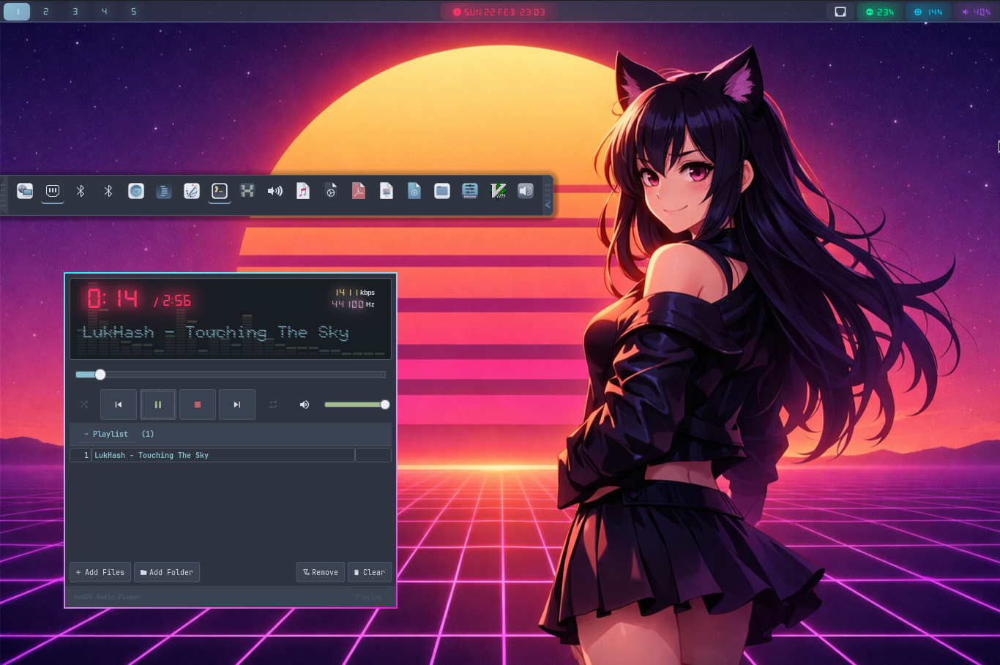

AI-Orchestrated Arch Linux
A Nordic cyberpunk Arch Linux distribution optimized for low-RAM systems, with integrated AI for smart system management. Nord palette, neon glow, synthwave soul.

Everything you need in a lightweight, powerful, and retro-futuristic operating system
Local AI with Ollama + OpenCode assistant for intelligent system orchestration, code generation, debugging and advanced assistance — pre-installed globally.
Automatic GPU detection at boot — Hyprland with 3D acceleration, Sway with software rendering. Both using Nord theme at 800MB RAM.
Designed for 1.9GB systems with ZRAM, EarlyOOM and aggressive kernel tuning.
Intel, AMD, and NVIDIA display drivers pre-installed for broad hardware support.
Create a labeled partition and your changes survive reboots. Works with Ventoy too.
Beautiful graphical installer with Nord theme, real-time progress and boot splash.
Node.js, npm, Git, VS Code and Oh My Zsh pre-installed out of the box.
English, Spanish, French, Portuguese, Italian, German, Chinese, Japanese and Korean with auto keyboard layout.
Network scanning and WPA2/WPA3 connection directly from the installer.
Locked root, dual UEFI bootloader, secure passwords and per-user isolation.
Full gamepad-to-WM bindings for Steam Deck. Manage windows, workspaces and media with buttons and back paddles — with automatic game inhibition.
Xbox Series gamepad support with LT/RT media combos, Share button screenshot and auto-profile detection — zero configuration needed.
Auto-detected compositor with Nordic cyberpunk aesthetics — keyboard-driven, lightweight, beautiful
madOS breathes neon life into modest hardware — cyberpunk performance on any machine
Intel Atom / AMD or equivalent (x86_64)
1.9GB minimum (optimized for limited memory)
Intel, NVIDIA or AMD — auto-detected with compute support
10GB minimum (~5GB ISO, expands when installed)
UEFI and BIOS support
Jack in and start your madOS experience today
Get the latest ISO from Internet Archive or GitHub Releases
dd if=madOS-*.iso of=/dev/sdX bs=4M
or use Ventoy / balenaEtcher
Desktop loads automatically — use live or run the installer
AI assistant, dev tools & optional persistent USB storage
Open source projects and content that power this cyberpunk dream
Track our progress and upcoming features